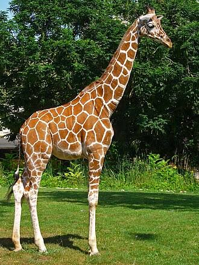

La jirafa es el mamífero terrestre más alto del mundo y el rumiante más grande, con machos que pueden alcanzar los 5.5 metros de altura y pesar hasta 1,200 kg, mientras que las hembras son ligeramente más pequeñas. Su rasgo más distintivo es su cuello extremadamente largo, que posee siete vértebras al igual que el de los humanos, complementado por una lengua azulada y prensil de hasta 50 centímetros que le permite arrancar hojas de los árboles más altos sin lastimarse con las espinas. Su pelaje presenta un patrón único de manchas marrones separadas por líneas claras que funciona como huella dactilar y camuflaje, y en la cabeza posee pequeños cuernos cubiertos de piel llamados osiconos. Debido a su dieta herbívora basada principalmente en hojas de acacia, pasa la mayor parte del día alimentándose y duerme de pie en periodos muy cortos que suman apenas un par de horas al día para evitar a los depredadores. Es un animal social y pacífico que vive en manadas abiertas y fluidas dentro de las sabanas, pastizales y bosques abiertos del continente africano.